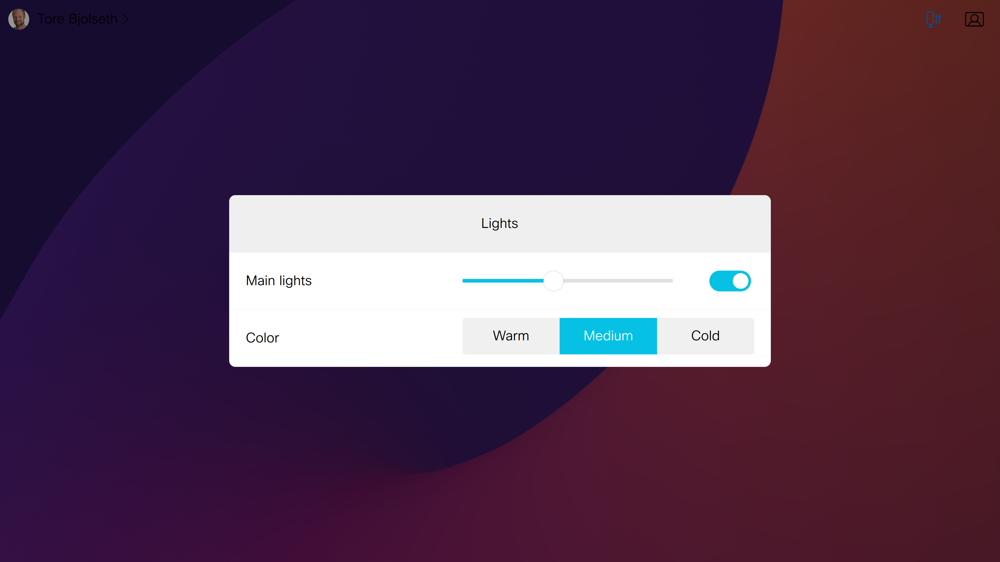

Color can be specified as name (blue, pink, ...), on hexidecimal format (#aa00cc) or RGB (rgb(128, 132, 199))
Creates a new UI extension config
Create group button, where the user can select one of several choices Example:
const group = GroupButton({
widgetId: 'my-colors',
button: {
green: 'Green',
red: 'Red',
blue: 'Blue',
}
})
Converts any node (and all children) to the XML format that the xAPI commands expect Typically you always want to do this on the config object only.
Generated using TypeDoc
Library for creating dynamic UI extensions for Cisco Webex Devices.
This means you don't need to know or deal with the XML syntax for UI extensions.
An extension (ui panel, action button or web app) is typically constructed by creating a tree of nodes. A node can be a panel, a page, a row, a slider etc. A node has attributes (type, name, color, text, ...), and most nodes types can also have child nodes.
The library will validate the attributes (a slider cannot have a name) and the children type (eg a row can only be added to a page, not a panel).
Each node type has, for convenience, a method that creates this node. Eg this is how we construct a page with two empty rows:
To save an extension to the video device, a panel / action button / web app must also be wrapped in a Config object. Here are 3 full examples:
Example - Create an action button:
Example - Create a panel:
 Result of running the code aboveExample - create a web app: